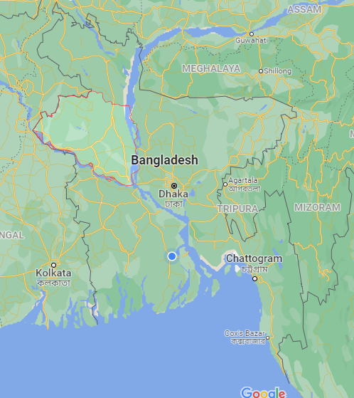

রাজশাহী/RAJSHAHI
রাজশাহী বিভাগ বাংলাদেশের মধ্য-পশ্চিমাঞ্চলের একটি প্রশাসনিক অঞ্চল। এর জনসংখ্যা প্রায় ২ কোটি এবং আয়তন
১৮,১৫৪ বর্গ কিলোমিটার। রাজশাহী বিভাগ আটটি জেলা, ৬৭টি উপজেলা, ৫৯টি পৌরসভার এবং ৫৬৪টি ইউনিয়ন
নিয়ে গঠিত। রাজশাহী, বগুড়া, পাবনা এবং সিরাজগঞ্জ রাজশাহী বিভাগের চারটি প্রধান বাণিজ্যকেন্দ্র এবং বড় শহর।
নাটোর, নওগাঁ, চাঁপাইনবাবগঞ্জ, জয়পুরহাট প্রধান কৃষি এলাকা। রাজশাহী হল এ বিভাগের রাজধানী।

নামকরণের ইতিহাস
রাজশাহী নামটির উৎপত্তি সম্পর্কে আলোচনা করতে গেলেই কয়েক শতাব্দী পূর্বে ফিরে যেতে হয়। এ শহরের প্রাচীন নামটি
ছিল মহাকাল গড়।পরে রূপান্তরিত হয়ে দাঁড়ায় রামপুর-বোয়ালিয়ায়।রামপুর-বোয়ালিয়া থেকে রাজশাহী নামটির উদ্ভব কিভাবে
হলো এর সুস্পষ্ট কোন ব্যাখ্যা নাই । ব্রিটিশ আমলের প্রাথমিক যুগের ইতিহাসে ও রাজশাহী নামক কোন জনপদ বা স্থানের
উল্লেখ নাই । অনেকে মনে করেন, এই জনপদ একদা বহু হিন্দু, মুসলিম, রাজা, সুলতান আর জমিদার শাসিত ছিল বলে
নামকরণ হয়েছে রাজশাহী।
ঐতিহাসিক ব্লকম্যানের (Bolch Mann) মতে, খ্রিষ্টীয় ১৫শ শতকে গৌড়ের মুসলিম সালতানাত
এই জেলার ভাতুড়িয়ার জমিদার রাজা গণেশ কতৃর্ক আত্মসাতের সময় থেকে রাজশাহী নামের উদ্ভব হয়েছে। হিন্দু রাজ আর
ফারসী শাহী এই শব্দ দুটির সমন্বয়ে উদ্ভব হয়েছে মিশ্রজাত শব্দটির।
ইতিহাস ও ঐতিহ্য
রাজশাহী শহরকে কেন্দ্র করে ১৭৭২ সালে জেলা গঠন করা হয়। ১৮৭৬ সালে গঠিত হয় রাজশাহী পৌরসভা। পরবর্তীতে
১৯৯১ সালে রাজশাহী সিটি কর্পোরেশনে রূপান্তরিত হয়।
ব্রিটিশ রাজত্বের সময়েও রাজশাহী বোয়ালিয়া নামে পরিচিত ছিল। তখন এটি ছিল তৎকালীন পূর্ববঙ্গ ও আসাম অঞ্চলের
অর্ন্তগত রাজশাহী জেলার প্রশাসনিক কেন্দ্র। রাজশাহীকে সে সময়ে রেশম চাষের প্রধান কেন্দ্র হিসেবে নির্বাচন করা হয়েছিল।
তখন রাজশাহীতে একটি সরকারী কলেজ ও রেশম শিল্পের জন্য একটি শিক্ষাপ্রতিষ্ঠান স্থাপন করা হয়। সেসময় থেকে
দেশবিভাগের পূর্ব পর্যন্ত পদ্মা নদীর উপর দিয়ে প্রতিদিন যাত্রীবাহী স্টিমার চলাচল করত।
১২ জুন ১৮৯৭ সালের ভয়াবহ ভূমিকম্পে রাজশাহী শহরের বেশীরভাগ ভবন ক্ষতিগ্রস্ত হয়। পরবর্তীতে অনেক ভবন আবার
নতুন করে স্থাপিত হয়।